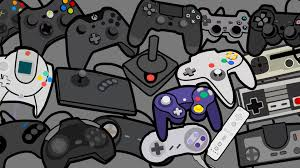
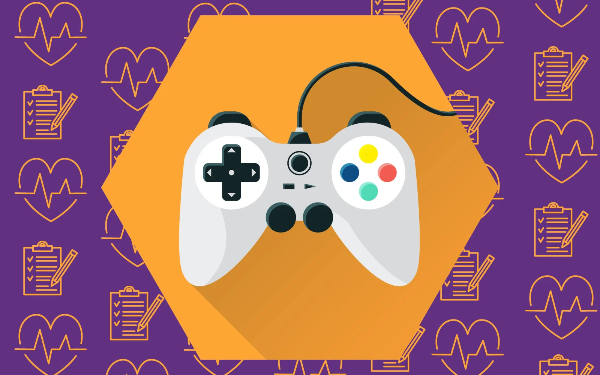
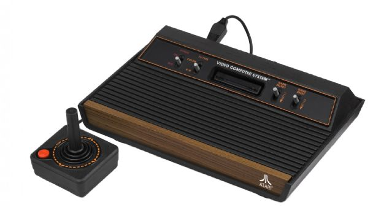

Los videojuegos han evolucionado desde simples pasatiempos electrónicos hasta convertirse en una de las formas de entretenimiento más influyentes del siglo XXI. Con una industria que supera los ingresos del cine y la música combinados, los videojuegos no solo son un fenómeno económico, sino también cultural, social y tecnológico. Este ensayo explora la historia de los videojuegos, su impacto en la sociedad, los beneficios y controversias que generan, y su futuro en un mundo cada vez más digitalizado.

• Juegos relajantes: Animal Crossing ayuda a reducir el estrés.
• Terapia de exposición: VR games para tratar fobias y ansiedad.
• OMS reconoce el "trastorno por juego" (gaming disorder).
• Problemas físicos: Fatiga visual, sedentarismo y síndrome del túnel carpiano.

